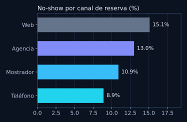
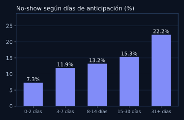
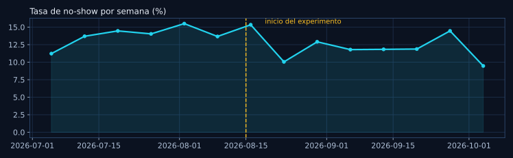
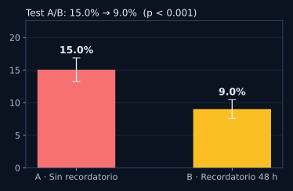

Cuánto pierde una operación de alquiler de vehículos cuando el cliente no se presenta — y cómo un simple recordatorio redujo el problema un 40%, medido con un experimento A/B.
Por José Andrés Sequeira Hernández, Analista de Datos · Costa Rica — ver el código y las consultas SQL en GitHub

Reservar en línea sale fácil… y olvidar también. El canal Web concentra el mayor no-show; el contacto humano del teléfono retiene mejor.

La pista de oro: con 0–2 días de anticipación casi todos llegan (7,3%); con 31+ días, el no-show se dispara a 22,2%. La gente reserva con emoción y un mes después la vida cambió.

La tendencia semanal lo cuenta sola: al iniciar el experimento (la mitad de las reservas empieza a recibir recordatorio), la tasa general cae de ~15% a ~11–12%.

El experimento, en limpio: 45 días, asignación aleatoria 50/50, casi 3.000 reservas entre los dos grupos.
| Grupo | Reservas | No-show |
|---|---|---|
| A · Sin recordatorio | 1.482 | 15,0% |
| B · Recordatorio 48 h antes | 1.498 | 9,0% |
Resultado: −6,0 puntos porcentuales (IC 95%: −8,4 a −3,7), reducción relativa del 40%, p < 0,001 (test z de dos proporciones). Unas 90 reservas recuperadas en 45 días ≈ $31.800; si el efecto se mantuviera un año, rondaría los $250.000. La lección: a veces la solución no es un modelo de tres meses — es medir bien, encontrar el patrón y mandar un recordatorio.
1 · Pregunta de negocio. ¿Cuánto cuesta el no-show, dónde se concentra y se puede reducir barato?
2 · SQL. Segmenté 6.000 reservas por canal, anticipación, vehículo y cliente frecuente (consultas completas en el repositorio).
3 · Experimento. Hipótesis: un recordatorio 48 h antes reduce el no-show. Diseño A/B aleatorizado, métrica única, prueba de proporciones.
4 · Siguiente paso. Un modelo simple de riesgo por reserva (Web + mucha anticipación = riesgo alto) para dar doble aviso solo donde más duele.